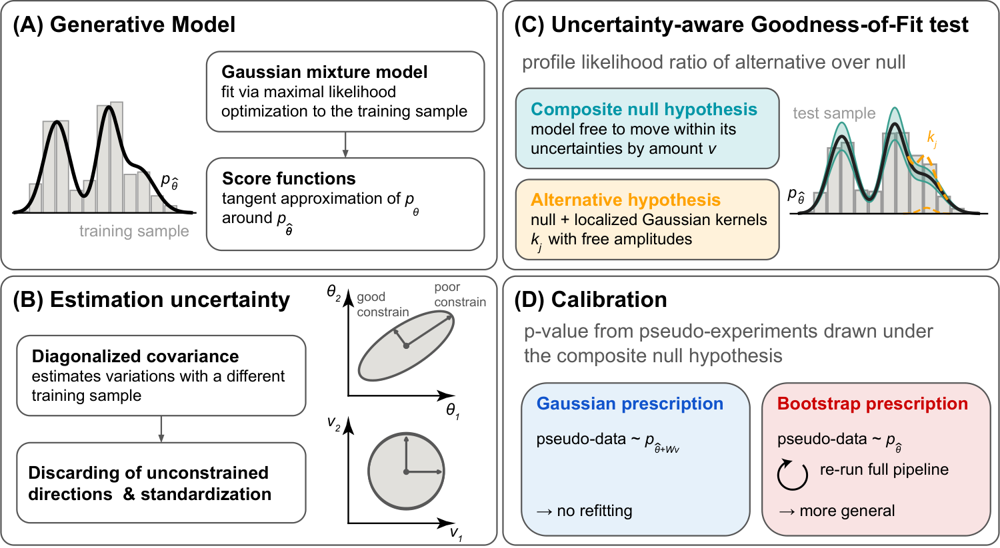

Methods for explainable novelty discovery using artificial intelligence
Research
Scientific discovery at scale, with statistical guarantees — uncertainty quantification, robustness, interpretability.
An anomaly is not always visible one observation at a time. A loaded die looks fair on any single throw and gives itself away only in the frequencies of many — and the same holds for fraud inside a plausible transaction history, for new fundamental interactions distorting the distributions of particle collisions, or for a language model whose behaviour has drifted in ways no single output reveals. Asking does what we observe match what our model of the world predicts? is one statistical problem, and classical goodness-of-fit tests answer it rigorously but lose power when deviations are rare or buried among uninformative features.
Modern machine learning handles the complexity but usually surrenders the two properties that make a detection actionable: calibrated error control, and an account of what in the data produced the signal. My work aims at methods that give up neither. Three commitments run through all of it — that uncertainty in the reference model belongs inside the test rather than bolted on afterwards; that interpretability should be a property of the architecture rather than a post-hoc narrative; and that a detection which cannot be characterized is of limited scientific use.
Robust anomaly tests under systematic uncertainty
Systematic uncertainties built into the detection model rather than corrected for afterwards; anomaly scores decomposed into known and novel sources; ensembles of specialized experts whose diversity buys robustness to anomalies no one anticipated. Every architectural choice determines what a test can and cannot see, and I work to make that dependence explicit and controllable.

Physics-inspired architectures and interpretability
A detection that cannot say anything about the anomaly it flagged does little for scientific progress. I design models whose interpretability comes from their architecture rather than from a post-hoc explanation: in SparKer, locality, sparsity, and competitive self-organization act as inductive biases, so individual components specialize on distinct anomalous patterns and the anomaly score acquires a geometric reading that can be traced back to the data. Physical principles — energy-based modelling above all — are where these design choices come from.

Detection at scale, from raw data to p-values
End-to-end strategies that pair domain-informed representation learning with interpretable likelihood-ratio tests, carrying point clouds, time series, images, or text from raw input all the way to rigorous p-values, without handcrafted summary statistics standing in between. I apply this to searches for new phenomena at the LHC, working toward statistical analysis performed directly on low-level detector information, including in real time during data acquisition.

Validating generative models
Generative surrogates are increasingly used in place of full physics simulations, which only helps if we know where they are wrong. I work on goodness-of-fit tests that decide whether a generative model is faithful enough to stand in for the real thing, and that diagnose the regions where it underperforms rather than returning a single pass/fail number — with the epistemic uncertainty of the generator propagated into the test itself.

Auditing and monitoring large AI models
Large models hide generation rules as intricate as any physical system, and their behaviour drifts with context. The same detection machinery becomes a diagnostic instrument for them: monitoring how internal structure varies under changing conditions, auditing fine-tuned models for harm that looks normal one output at a time, and asking what the geometry of a representation says about the features a model has actually learned. The aim throughout is to detect and characterize simultaneously — to localize what changed, not merely to flag that something did.

VERAIPHY — Validation & Evaluation for Robust AI in Physics
I co-organize VERAIPHY, an initiative endorsed by the PHYSTAT community that is producing a series of articles on statistical standards for developing, evaluating, and deploying machine learning in fundamental physics. Each article takes one methodological domain and asks what has to hold statistically for results obtained with it to support a discovery claim — which questions to ask, which tests to run, and how to read the answers.
My own contribution to the series is the review Are we ready for AI-driven discovery? AI verification before the next fundamental physics breakthrough, which sets out when verification is essential within the statistical discovery workflow, and where machine learning’s intrinsic limits — unavoidable inductive bias, sample complexity, experimental constraints — bound what can be claimed.
Software
NPLM — New Physics Learning Machine
A machine-learning implementation of the likelihood-ratio test for signal-agnostic anomaly detection: returns a calibrated p-value without specifying the signal in advance, and reconstructs the most discrepant regions of phase space. Developed during my PhD and extended since.
SparKer
Sparse, self-organizing ensembles of local kernels for detecting rare anomalies in learned representations. Sparsity, locality, and competition produce geometrically interpretable detection experts with formal learning-dynamics guarantees. Takes point clouds, time series, images, or text through to rigorous p-values.
Generative model validation
Goodness-of-fit tooling for generative surrogates: tests that both detect deviations and diagnose the regions where a generative model underperforms, with epistemic uncertainty propagated into the test.
Teaching notebooks
Hands-on notebooks on diffusion models, variational autoencoders, and generative-model validation, written for the IAIFI Summer School and free to reuse.